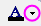

Letztes Update: 06.10.2021
Sie können eine benutzerdefinierte Farbe überall dort definieren, wo Sie Farbeigenschaften einstellen, ob Sie Farben eines Punkt-Liniendiagramms mit den Schaltflächen auf der Symbolleiste Stil oder die Füllfarbe einer Arbeitsblattzelle im Dialog Zellen formatieren festlegen. Benutzerdefinierte Farben werden mit Ihrem Origin-Projekt gespeichert und sind daher für jeden verfügbar, mit dem Sie Ihr Origin-Projekt teilen.
Origin besitzt einige Hilfsmittel auf der Bedienoberfläche (GUI) zum Definieren von benutzerdefinierten Farben. Welches Hilfsmittel Sie wählen, hängt wahrscheinlich von der Version Ihres Origins ab und davon, ob Sie nur ein oder zwei schnelle Farben brauchen, um sie auf ein Objekt anzuwenden, oder ob Sie eine Farbliste bzw. Palette erstellen möchten, die gespeichert und auf eine beliebige Anzahl von Datenzeichnungen angewendet werden soll.
Lesen Sie hierzu die Informationen in der Origin-Hilfe zum benutzerdefinierten Anpassen von Farben für Datenzeichnungen.
Wenn Sie zum Beispiel eine benutzerdefinierte Schriftfarbe für ein Textobjekt definieren möchten, könnten Sie auf die Symbolleiste Format und die Schaltfläche für das Menü Schriftfarbe (den nach unten weisenden Pfeil auf der Schaltfläche Schriftfarbe ) klicken, um die Farbauswahl einzublenden. Klicken Sie dann dort, wo Sie ein "+"-Symbol sehen auf ein leeres Farbfeld und öffnen Sie den Dialog Farben.
Beachten Sie, dass die Bedienoberfläche vor 2016 etwas anders aussieht. Der Vorgang ist jedoch grundsätzlich derselbe.
Öffnen Sie die Farbauswahl und klicken Sie dann auf die Registerkarte Einzeln. Klicken Sie unter Benutzerdefiniert auf ein leeres Farbfeld, um den Dialog Farben zu öffnen. Klicken Sie dann auf die Registerkarte Benutzerdefiniert. Hier können Sie Farben mit einer von drei Methoden definieren:

Seit Origin 2022 ist das Hilfsmittel Pipette direkt über die Benutzerdefinierte Liste verfügbar. Klicken Sie auf die Pipette und wählen Sie die gewünschte Farbe in einem anderem Bereich Ihres Arbeitsbereichs, um eine neue Farbe hinzuzufügen.
Der Schieber kann Ihnen helfen, eine ähnliche Farbe mit einem unterschiedlichen Ton oder einer unterschiedlichen Intensität über die Standardfarblisten/-paletten zu mischen. Wenn Sie zum Beispiel die letzte Farbe der Liste D02 Maple feinabstimmen möchten, können Sie:
| Hinweis: Diese benutzerdefinierten Farben können dann überall in Origin verwendet werden. Sie werden lokal und zusammen mit dem Projekt oder Fenster gespeichert. Wenn also ein Dritter das Projekt auf einem anderen Computer betrachtet, sieht er ebenfalls die von Ihnen zugewiesene Farbe. |
Seit Origin 2021 können Sie den Farbmanager verwenden, um benutzerdefinierte Farblisten bzw. Paletten zu definieren. Wenn sie definiert und gespeichert ist, können Sie von überall auf der Bedienoberläche aus auf Ihre Farbliste bzw. Palette zugreifen.
Ihre benutzerdefinierte Farbliste oder Palette ist jetzt zum Anwenden einzelner Farben oder Listen auf alle Elemente der Bedienoberfläche verfügbar.
Anweisungen zum Verwenden der Bedienelemente Farben erzeugen finden Sie unter Eine neue Farbliste bzw. Palette hinzufügen.
Schlüsselwörter:benutzerdefinierte Farbe, RGB, HSL, HEX, HTML-Farbe, Farben erzeugen, Farbliste, Palette, Inkrement
Origin-Version mind. erforderlich: Origin 2016